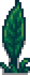
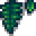

Luau

Der Luau findet an jedem 11. Tag des Sommers statt. Du nimmst am Luau Teil, indem du den Strand zwischen 9:00 Uhr und 14:00 Uhr betrittst. Wenn der Luau beendet ist, kehrst du automatisch zum Hof um 22:00 Uhr zurück.
Am Tag des Festivals ist jedes Haus und Geschäft in Stardew Valley verschlossen und kann nicht betreten werden.
Das zentrale Ereignis des Luau ist die Suppe. Die Dorfbewohner bringen verschiedene Zutaten, die sie in die Suppe geben wollen. Zum Schluss bewertet der Gouverneur dann die Suppe. Die Bewertung beginnt, indem der Spieler mit Bürgermeister Lewis redet und "Ja, lass uns anfangen." als Dialogoption wählt.
Je nach dem, was du in die Suppe gibst, gibt es eine andere Reaktion vom Gouverneur und Bürgermeister Lewis. Das Ergebnis erhöht oder verringert die Freundschaftspunkte mit allen Dorfbewohnern. Freundschaft mit Sandy, dem Zauberer, Krobus, den Kindern des Spielers und dem Zwerg sind nicht betroffen.
Der Luau ist automatisch beendet, nachdem der Gouverneur die Suppe probiert hat.
Shop
Pierre hat einen Stand und verkauft folgende Gegenstände.
| Bild | Name | Beschreibung | Preis |
|---|---|---|---|
| Palmenaufkleber | Kann in deinem Haus platziert werden. | ||
|  |
Dschungelaufkleber | Kann in deinem Haus platziert werden. | |
|  |
Decken-Blätter | Kann in deinem Haus platziert werden. | |
| Totempfahl | Kann als Dekoration platziert werden. | ||
| Sternfrucht (1) | Eine extrem saftige Frucht, die in heißem, feuchtem Klima wächst. Leicht süß mit einem sauren Unterton. | ||
| Einfache Fackel | Kann als Dekoration platziert werden. |
Aufgabe
Bring eine Zutat, die du der Suppe hinzufügen möchtest, dabei wird nur Essbares und Ungekochtes akzeptiert. Es wird auch erwähnt, dass du etwas Frisches, von guter Qualität mitbringen solltest.
Es gibt 7 Möglichkeiten, auf die das Fest enden kann, abhängig davon, welche Zutat der Spieler in die Suppe gibt. Das jeweilige Ende kann dabei die Freundschaft mit den Dorfbewohnern beeinflussten.
Etwas fehlt Reaktion
| “ | “Hmmm... Also, es ist nicht schlecht, aber irgendetwas fehlt... Hat jeder in der Stadt was dazu beigetragen? Es fühlt sich so an, als würde eine einzigartige Note fehlen.” |
| — Gouverneur |
Wenn der Spieler nichts in die Suppe gibt, beeinflusst das die Freundschaft mit den Dorfbewohnern nicht. Im Mehrspieler müssen alle Spieler einen Gegenstand zur Suppe hinzufügen, ansonsten wird die "Etwas fehlt"-Reaktion erreicht.
Beste Reaktion
| “ | “Ach, du meine Güte... Das ist die beste Suppe die ich je probiert habe!” |
| — Gouverneur |
Der Spieler erhält 120 Freundschaftspunkte mit den Dorfbewohnern, wenn eine der folgenden Zutaten in die Suppe gegeben wird. Im Mehrspieler müssen alle Spieler einen Gegenstand aus dieser Liste hinzufügen, damit die "Beste Reaktion" erreicht wird.
Gute Reaktion
| “ | “Ah... eine sehr angenehme Suppe. Die Erzeugnisse dieses Tals enttäuschen mich nie!” |
| — Gouverneur |
Der Spieler erhält 60 Freundschaftspunkte mit den Dorfbewohnern, wenn eine der folgenden Zutaten in die Suppe gegeben wird.
Neutrale Reaktion
| “ | “Hmm... Viel kann ich nicht dazu sagen. Die Suppe ist sehr gewöhnlich.” |
| — Gouverneur |
Der Spieler erhält keine, verliert aber auch keine Freundschaftspunkte mit den Dorfbewohnern, wenn eine der folgenden Zutaten in die Suppe gegeben wird.
Schlechte Reaktion
| “ | “Ähm... Sie ist irgendwie ekelhaft. Ich glaube, ich verzichte dieses Jahr.” |
| — Gouverneur |
Der Spieler verliert 50 Freundschaftspunkte mit den Dorfbewohnern, wenn eine der folgenden Zutaten in die Suppe gegeben wird.
| Qualität | Zulässige Gegenstände |
|---|---|
| beliebig | Brombeere • Edelwicke • Frühlingszwiebel • Gotteslachs • Grünalge • Hering • Joja-Cola • Karpfen • Krokus • Lachsbeere • Müsliriegel • Narzisse • Qi Frucht • Sardelle • Seetang • Ungemahlener Reis • Weißalge • Wein (Qi Frucht) |
Schlechteste Reaktion
| “ | “Igitt! Das ist ekelhaft! Ich glaube, mir wird schlecht...” |
| — Gouverneur |
Der Gouverneur wird ohnmächtig und der Spieler verliert 100 Freundschaftspunkte mit den Dorfbewohnern, wenn eine der folgenden Zutaten in die Suppe gegeben wird.
| Qualität | Zulässige Gegenstände |
|---|---|
| beliebig | Harz • Kugelfisch • Roter Pilz • Schattenmayonnaise • Seegurke • Skorpionkarpfen • Stechpalme |
Geheime Reaktion
| Zitat | |||
|---|---|---|---|
|
Das Hinzufügen der lila Shorts von Bürgermeister Lewis zur Suppe führt zu einer einzigartigen Reaktion des Gouverneurs und von Lewis. Die Freundschaft mit den Dorfbewohnern bleibt in diesem Szenario unberührt. Wenn ein Spieler in einem Mehrspieler-Spiel die Shorts zur Suppe hinzufügt, ist das Ergebnis die geheime Antwort, unabhängig davon, was noch hinzugefügt wird.
Post
Galerie

Etwas fehlt

Beste Reaktion

Gute Reaktion

Neutrale Reaktion

Schlechte Reaktion

Schlechteste Reaktion
Geschichte
- 1.3: Alle Spieler im Mehrspieler können zur Suppe beitragen. Bürgermeister Lewis' Shorts können zur Suppe hinzugefügt werden.
- 1.4: Fehler behoben, bei dem Dorfbewohner nach dem Fest einem falschen Tagesablauf folgten.
- 1.5: Pierres Stand hinzugefügt. Fehler behoben, bei dem Treppen zur Suppe hinzugefügt werden konnten.
| Festivals | |
|---|---|
| Frühling | Eierfest • Blumentanz |
| Sommer | Luau • Tanz der Mondlichtquallen |
| Herbst | Sterntautaler Volksfest • Geisternacht |
| Winter | Fest des Eises • Nachtmarkt • Fest des Wintersterns |